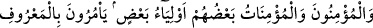
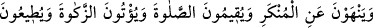
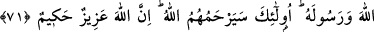
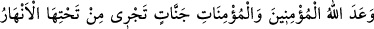
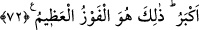

MÜ’MİNLER
71. İnanan erkekler ve inanan kadınlar birbirlerinin velîsidirler. İyiliği emrederler,
kötülükten men ederler, namazı kılarlar, zekâtı verirler, Allah’a ve Rasûlü’ne itâat
ederler. İşte onlara, Allah rahmet edecektir. Allah dâimâ üstündür, hüküm ve
hikmet sâhibidir.
72. Allah, inanan erkeklere ve inanan kadınlara altlarından ırmaklar akan, içinde
sürekli kalacakları cennetler ve Adn cennetlerinde güzel meskenler vaadetmiştir.
Allah’ın rızası ise hepsinden büyüktür. İşte büyük kurtuluş budur.
“İnanan erkekler ve inanan kadınlar birbirlerinin velîsidirler.” Hak dinde
birbirlerine uyarlar, tevhid akîdesinde birleşirler. Din ve dünya işlerinde birbirlerine
yardım ederler. Bazıları da diğer bazılarını terbiye ederek ve nefis tezkiyesi yaptırarak
yüksek derecelere ulaştırırlar. Bunlar Allah Teâlâ’nın yolunun mürşidleridir.
“İyiliği emrederler.” İman ve Allah’a itaat başta olmak üzere her çeşit hayrı içine
alan iyiliği emrederler. Allah’ı talep konusunda birbirlerini teşvik ve tahrik ederler.
Hakîkî “ma‘rûf (bilinen, tanınan)” da O’dur. Nitekim Allah Teâlâ şöyle buyurmuştur:
“Ben ma‘rûf olmak (bilinmek) istedim.”[198]
Küfür, kulu Allah’tan uzaklaştıran dünya sevgisi ve diğer her çeşit “kötülükten men
ederler. Namazı kılarlar.” Sürekli olarak Allah Teâlâ’yı zikederler, devamlı surette
kalp murâkabesinde bulunurlar; kalplerinin Allah ile beraber olmasını temin ederler.
Öyle ki onları ne ticaret ne de alış-veriş Allah’ı zikirden alıkoyabilir. Onlar, mükâşefe
erbabı ve gönül ehli kimselerdir.
“Zekâtı verirler” farz olan zekatı verirler. Hattâ zarûrî ihtiyaçlarından arta kalan
mallarını da Allah yolunda infak ederler. Bu infak sayesinde kendilerini dünya
sevgisinden arındırırlar. Bütün emir ve yasakları konusunda “Allah’a ve Rasûlü’ne
itâat ederler”.
Bu âyette geçen “namazı kılarlar” ifadesi, daha önce (67. âyette) münâfıklar
hakkında söylenen “Allah’ı unuttular” ifadesinin mukabili (karşılığı); “zekâtı